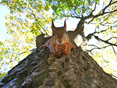

Trees are beneficial in so many ways. We’ve discussed using trees as windbreaks, planting ornamental trees for visual embellishments, and saving money on energy bills by using the shade that trees provide to your advantage. In addition to all the great things trees do for us, they do even more for nature and wildlife. From food and shelter to cleaning our air and storing carbon, trees and tree service in Monmouth County support nature and wildlife.
Birds, Squirrels, and Other Animals Appreciate Trees

Providing a habitat is one of the top advantages of trees in nature. Birds, squirrels, and many other animals turn to trees to be their homes. Canopies of deciduous trees can help protect inhabitants from predators and escaping into a tree eliminates threats that can’t climb or fly. Plus, trees are a great place to raise young for many creatures.In addition to that, trees and shrubs supply the animals that enjoy them with food. Berries, seeds, fruits and nuts are the primary source of nutrition for many wildlife. Even leaves and flowers feed birds and other animals. Aside from trees themselves providing food, they are also home to many bugs and insects that are the main food supply of woodland creatures.
In order for the trees in your yard to continue to offer all these benefits, contact us for your tree service in Monmouth County.
Trees and Tree Service in Monmouth County Benefit the Earth
Healthy trees and their roots help aerate soil allowing more nutrients to be delivered to the soil and the living things planted in it. In addition to that, decaying leaves and tree bits increase the level of nutrients in the soil by creating natural compost. This improves soil biodiversity which directly improves the health of the lawn and trees growing in that soil.
Sturdy root systems also help to prevent erosion. As soil gets washed away, the nutrients held within it goes away too. Soil also helps absorb rain and water reducing flooding and wash-out. By slowing the flow rate, erosion is greatly reduced. Without roots to hold on to the soil, it can get swept in bodies of water polluting it. To get the healthiest roots, make sure you provide your trees with professional tree service in Monmouth County.
Homeowners keep house plants for a variety of reasons, but one of them is because plants help clean the air. If small house plants can improve the indoor air quality of a home, consider the impact that trees have around the world. This is why maintaining healthy trees worldwide are so crucial. Removing pollutants like carbon dioxide is essential to sustaining life on earth. But trees don’t just filter out toxins. Through photosynthesis, they also produce oxygen by converting carbon dioxide in the environment.
Our Trees Service in Monmouth County Supports the Environment
 As trees take in carbon dioxide and expel oxygen, they store the extra carbon in their trunks. The larger the tree, the more carbon it can store. This is why taking care of trees is so important. We need large, mature, healthy trees to treat our air and provide so many other benefits.
As trees take in carbon dioxide and expel oxygen, they store the extra carbon in their trunks. The larger the tree, the more carbon it can store. This is why taking care of trees is so important. We need large, mature, healthy trees to treat our air and provide so many other benefits.
By trimming certain branches off of a tree, the weight of the top of the tree is changed. If you remove too many limbs on one side, the tree will become too heavy on one side and is likely to uproot. This is why professional tree service in Monmouth County by a licensed tree company is so essential. Trees provide so many benefits. The catch is that they can only do that if taken care of properly. Contact us today if you have trees in your yard that could use a little TLC.